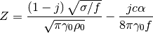
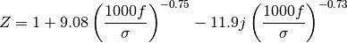
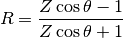
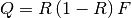
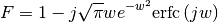

Reflection¶
The reflection module contains functions for calculating reflection factors and impedances.
- class acoustics.reflection.Boundary(frequency, flow_resistivity, density=1.296, soundspeed=343.0, porosity_decrease=120.0, specific_heat_ratio=1.4, angle=None, distance=None, impedance_model='db', reflection_model='plane')[source]¶
Bases: object
An object describing a boundary.
- angle = None¶
Angle of incidence
 .
.
- density = None¶
Density of air
 .
.Note
This value is only required for when calculating the impedance according to Attenborough’s model. See impedance_attenborough().
- distance = None¶
Path length of the reflected ray
 .
.Note
This value is only required for when calculating the spherical wave reflection factor. See reflection_factor_spherical_wave().
- flow_resistivity = None¶
Flow resistivity
 .
.
- frequency = None¶
Frequency. Single value or vector for a frequency range.
- impedance[source]¶
Impedance according to chosen impedance model defined using impedance_model().
- impedance_model = None¶
Impedance model.
Possibilities are 'db' and 'att' for respectively impedance_delany_and_bazley() and impedance_attenborough().
- plot_impedance(filename=None)[source]¶
Plot magnitude and phase of the impedance as function of frequency.
- porosity_decrease = None¶
Rate of exponential decrease of porosity with depth
 .
.Note
This value is only required for when calculating the impedance according to Attenborough’s model. See impedance_attenborough().
- reflection_factor[source]¶
Reflection factor according to chosen reflection factor model defined using reflection_model().
- reflection_model = None¶
Reflection factor model.
Possibilities are 'plane' and 'spherical'` for respectively reflection_factor_plane_wave() and reflection_factor_spherical_wave().
- soundspeed = None¶
Speed of sound in air
 .
.Note
This value is required when calculating the impedance according to Attenborough’s model or when calculating the spherical wave reflection factor. See respectively impedance_attenborough() and reflection_factor_spherical_wave().
- specific_heat_ratio = None¶
Ratio of specific heats
 for air.
for air.Note
This value is only required for when calculating the impedance according to Attenborough’s model. See impedance_attenborough().
- acoustics.reflection.DENSITY = 1.296¶
Density of air
.
- acoustics.reflection.POROSITY_DECREASE = 120.0¶
Rate of exponential decrease of porosity with depth
.
- acoustics.reflection.SOUNDSPEED = 343.0¶
Speed of sound in air
.
- acoustics.reflection.SPECIFIC_HEAT_RATIO = 1.4¶
Specific heat ratio of air
.
- acoustics.reflection.impedance_attenborough(frequency, flow_resistivity, density=1.296, soundspeed=343.0, porosity_decrease=120.0, specific_heat_ratio=1.4)[source]¶
Impedance according to the two-parameter model by Attenborough.
Parameters: - frequency – Frequency
 .
. - flow_resistivity – Flow resistivity .
- soundspeed – Speed of sound in air .
- density – Density of air .
- porosity_decrease – Rate of exponential decrease of porosity with depth .
- specific_heat_ratio – Ratio of specific heats for air.
The impedance
 is given by
is given by
- frequency – Frequency
- acoustics.reflection.impedance_delany_and_bazley(frequency, flow_resistivity)[source]¶
Impedance according to the empirical one-parameter model by Delany and Bazley.
Parameters: - frequency – Frequency .
- flow_resistivity – Flow resistivity .
The impedance
is given by
- frequency – Frequency
- acoustics.reflection.numerical_distance(impedance, angle, distance, wavenumber)[source]¶
Numerical distance
 .
.Parameters: - impedance – Normalized impedance .
- angle – Angle of incidence .
- distance – Path length of the reflected ray .
- wavenumber – Wavenumber
 .
.
The numerical distance
is given by
- impedance – Normalized impedance
- acoustics.reflection.reflection_factor_plane_wave(impedance, angle)[source]¶
Plane wave reflection factor
 .
.Parameters: - impedance – Normalized impedance .
- angle – Angle of incidence .
The plane wave reflection factor
is given by
where
is the normalized impedance and the angle of incidence.- impedance – Normalized impedance
- acoustics.reflection.reflection_factor_spherical_wave(impedance, angle, distance, wavenumber)[source]¶
Spherical wave reflection factor
 .
.Parameters: - impedance – Normalized impedance .
- angle – Angle of incidence .
- distance – Path length of the reflected ray .
- wavenumber – Wavenumber .
The spherical wave relfection factor
is given by
where
is the plane wave reflection factor as calculated in reflection_factor_plane_wave() and  is given by
is given by
where
is the numerical distance as calculated in numerical_distance().- impedance – Normalized impedance